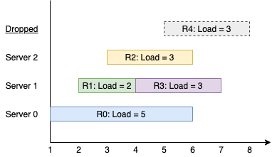

You have k servers numbered from 0 to k-1 that are being used to handle multiple requests simultaneously. Each server has infinite computational capacity but cannot handle more than one request at a time. The requests are assigned to servers according to a specific algorithm:
ith (0-indexed) request arrives.(i % k)th server is available, assign the request to that server.ith server is busy, try to assign the request to the (i+1)th server, then the (i+2)th server, and so on.You are given a strictly increasing array arrival of positive integers, where arrival[i] represents the arrival time of the ith request, and another array load, where load[i] represents the load of the ith request (the time it takes to complete). Your goal is to find the busiest server(s). A server is considered busiest if it handled the most number of requests successfully among all the servers.
Return a list containing the IDs (0-indexed) of the busiest server(s). You may return the IDs in any order.
Example 1:
Input: k = 3, arrival = [1,2,3,4,5], load = [5,2,3,3,3] Output: [1] Explanation: All of the servers start out available. The first 3 requests are handled by the first 3 servers in order. Request 3 comes in. Server 0 is busy, so it's assigned to the next available server, which is 1. Request 4 comes in. It cannot be handled since all servers are busy, so it is dropped. Servers 0 and 2 handled one request each, while server 1 handled two requests. Hence server 1 is the busiest server.
Example 2:
Input: k = 3, arrival = [1,2,3,4], load = [1,2,1,2] Output: [0] Explanation: The first 3 requests are handled by first 3 servers. Request 3 comes in. It is handled by server 0 since the server is available. Server 0 handled two requests, while servers 1 and 2 handled one request each. Hence server 0 is the busiest server.
Example 3:
Input: k = 3, arrival = [1,2,3], load = [10,12,11] Output: [0,1,2] Explanation: Each server handles a single request, so they are all considered the busiest.
Example 4:
Input: k = 3, arrival = [1,2,3,4,8,9,10], load = [5,2,10,3,1,2,2] Output: [1]
Example 5:
Input: k = 1, arrival = [1], load = [1] Output: [0]
Constraints:
1 <= k <= 1051 <= arrival.length, load.length <= 105arrival.length == load.length1 <= arrival[i], load[i] <= 109arrival is strictly increasing.